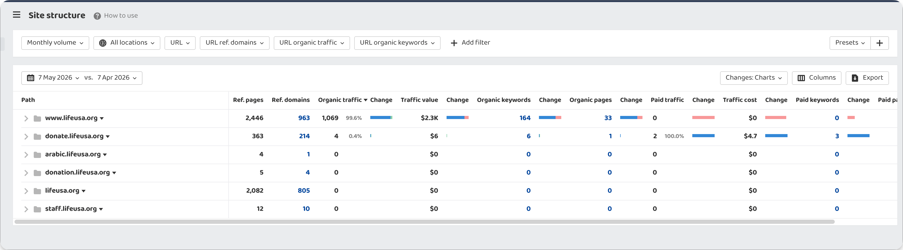
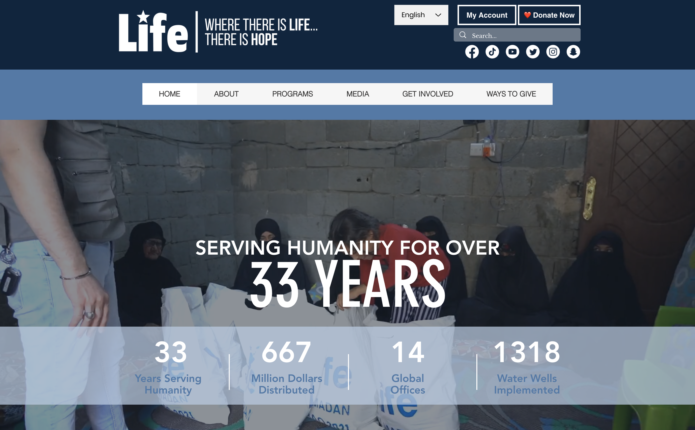
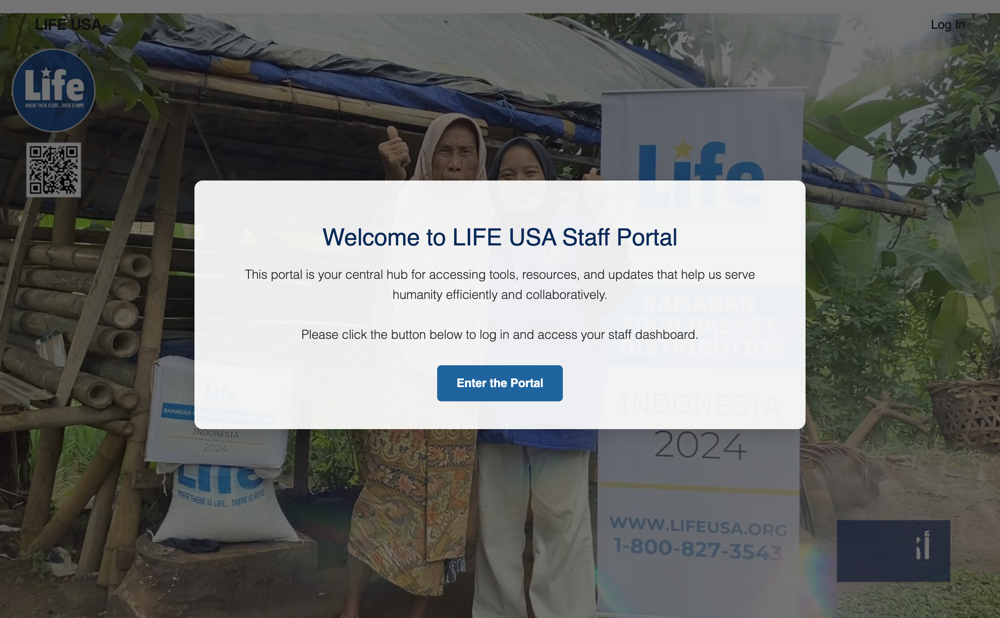
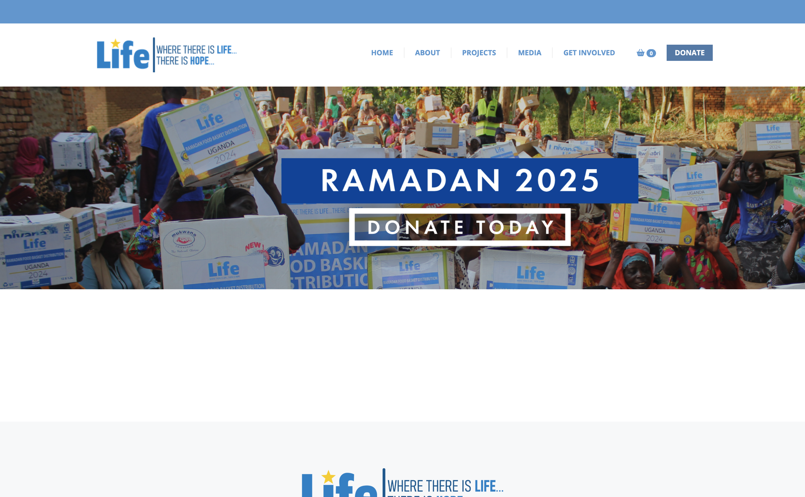
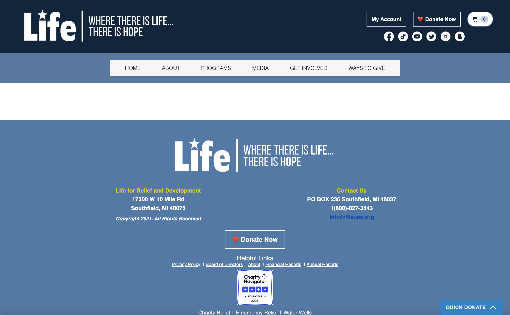
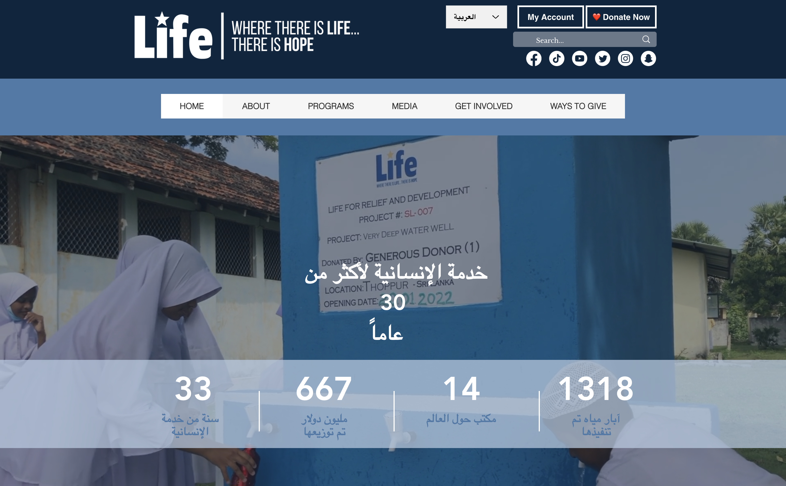

An executive walkthrough of lifeusa.org, what is working, what is quietly costing you donors and visibility, and what to fix first. Grounded in live evidence and real screenshots, not opinions.
Your domain has real authority and a working bilingual structure. The problems are not "you need a new website", they are fixable plumbing issues that fragment your equity and hide your content from search.
Sources: Ahrefs site structure export (7 May 2026); Screaming Frog full-site crawl; live header & Lighthouse re-checks (5 June 2026). Every claim in this deck is backed by an evidence slide or appendix entry.
Nothing here is a guess. Each finding was captured with an industry tool and re-verified live before this deck was built.
Full-site crawl of 345 crawlable URLs + 1,144 images. Source of the indexation, image, heading, and metadata findings.
Backlink & subdomain authority export. Source of referring-domain and organic-traffic numbers per subdomain.
curl + dig against the live site and every subdomain. Source of language-header, redirect, schema and DNS evidence.
Live mobile audit run 5 June 2026 in Chrome. Source of accessibility, best-practices and SEO scores in this deck.
Before the problems, three real assets most charities your size do not have.
963 referring domains and ~1,069 monthly organic visits to www. This is years of earned trust. The fixes in this deck are about using it, not building it.
Arabic/English hreflang tags are already implemented in the homepage. They need a one-line locale fix, not a rebuild.
donate.lifeusa.org has its own 214 referring domains and a hardened security setup (CSP + HSTS). A solid foundation to consolidate onto.
Source: Ahrefs site structure export, file site structure.png, captured 7 May 2026.
| Subdomain | Ref. domains | Organic traffic | Pages |
|---|---|---|---|
| www.lifeusa.org | 963 | 1,069 | 33 |
| lifeusa.org (apex) | 805 | 0 | 0 |
| donate.lifeusa.org | 214 | 4 | 1 |
| staff.lifeusa.org | 10 | 0 | 0 |
| donation.lifeusa.org | 4 | 0 | 0 |
| arabic.lifeusa.org | 1 | 0 | 0 |
Ahrefs subdomain export, 7 May 2026.


Live capture, www.lifeusa.org homepage: 5 June 2026, 1440px desktop.
Clear brand, an emotional hero, prominent "Donate Now", a language switcher, and trust stats (33 years, $667M distributed, 1,318 water wells). Visitors land in a confident place.
Every number below is a counted fact from the crawl, not an estimate.
Source: Screaming Frog issues overview (issues_overview_report.csv) + blog sitemap count (live, 463 posts, 5 June 2026).
Google treats every subdomain as a separate website. Authority earned on one does not lift the others, so your equity is split five ways.

staff.lifeusa.org: a public WordPress site titled "My WordPress Blog".

donation.lifeusa.org: a second donation platform (Givecloud).

donate.lifeusa.org: the primary donor portal (214 ref domains).
| Subdomain | What it is | Status | Recommendation |
|---|---|---|---|
| www.lifeusa.org | Main Wix site | Keep | Your single home. Everything points here. |
| donate.lifeusa.org | Donor portal (214 ref domains) | Keep | Make this the one donations platform. |
| donation.lifeusa.org | 2nd platform (Givecloud) | Merge | 301-redirect into donate. Unify donor data. |
| staff.lifeusa.org | Public WordPress | Lock down | Put behind login + noindex. Not for the public. |
| arabic.lifeusa.org | Dead in DNS | Sunset | Remove; reclaim its backlink to www. |
Live re-verification, 5 June 2026. This single workstream delivers the largest structural SEO gain on the property.
Wix was telling Google your English pages were Chinese, Turkish and French, a strong explanation for why content did not surface in English search.
The worst of the bug has cleared, pages now report English. But two issues remain: the locale flips between en-GB / en-US inconsistently, and your /ar Arabic page still reports English, not Arabic.
Your hreflang tags exist, good. But the Arabic version is declared as ar-jo (Jordanian Arabic). For a global humanitarian charity serving Arabic speakers worldwide, this narrows the audience Google will show your content to.
ar-jo → ar. This widens your Arabic reach from one country to the entire Arabic-speaking world. إصلاح من سطر واحد: تغيير ar-jo إلى ar يوسع وصولك لكل العالم العربي.
www.lifeusa.org/ar: the Arabic experience exists and renders well.
122 of 345 crawlable pages carry a noindex directive, an instruction telling Google to drop them from results.
On a site with only 33 actively ranking pages, a 35% noindex rate almost certainly contains pages that should be visible. Every accidental noindex is a page that can never rank, never drive a donation, and never earn credit for its backlinks, no matter how good the content is.
Source: Screaming Frog directives report. The gap between "crawlable" and "ranking" is where the opportunity sits.
451 images have an empty alt attribute and 20 have none at all, 471 in total. When you publish an Arabic article with photos, search engines have no text describing what the image shows, so it cannot be indexed for image search in any language.
This is the second half of your original concern: "my images don't appear in search." This is exactly why.
Screaming Frog issues overview. Affected URLs exported per image in images_missing_alt_text.csv.
1,035 images (90%) have no width or height defined. The browser doesn't know how much space to reserve, so the layout jumps as the page loads, measured by Google as Cumulative Layout Shift, a ranking signal.
543 images (47%) are over 100 KB, slowing down how fast the main content appears (Largest Contentful Paint). Both pull rankings down on every page and push donors on slow phones to leave before the Donate button loads.
Run live on your homepage, mobile, 5 June 2026, inside Chrome.
llms.txt missing, AI engines can't read your site cleanlyYour homepage declares the organization as ProfessionalService, a for-profit business type in Google's vocabulary. The correct type for a registered nonprofit is NGO.
The wrong type blocks nonprofit-specific Google features: the donations panel, charity disambiguation, and trust badges. And your 463 blog posts carry no Article schema, the single largest rich-result opportunity on the site (author, date, headline image in search).
NGO + add DonateAction; enable Article schema in the Wix Blog SEO panel across all posts.Live extraction, 5 June 2026: type unchanged since May. Ref: schema.org/NGO
Individually minor, collectively they cost click-through and confuse search engines about what each page is.
| Issue | Pages | Why it matters | Priority |
|---|---|---|---|
| Missing meta description | 144 (54%) | Google writes its own snippet, you lose control of the donor's first impression in search | Medium |
| Page title same as H1 | 97 (37%) | Missed chance to target additional keywords | Medium |
| Title over 60 characters | 72 (27%) | Truncated in search results | Medium |
| Missing H1 heading | 37 (14%) | One of the strongest on-page ranking signals, absent | Medium |
| Duplicate H2 headings | 114 (43%) | Pages look the same to search engines | Low |
| Exact-duplicate pages | 7 | Splits ranking signals between identical URLs | High |
| Mixed content (HTTP URLs) | 5 | "Not secure" warnings; erodes donor trust | High |
Source: Screaming Frog issues overview (issues_overview_report.csv), full-site crawl.
The hero banner already says 33 years (founded 1992). The meta description Google reads still says 29+. Two different numbers about the same org.
Leftover test pages and internal codes are published in your sitemap and submitted to Google. They should be confirmed live or removed.
Three causes stacked on top of each other. Each one alone would hurt; together they explain the complaint completely.
The Arabic /ar page reports itself to Google as English (en-US). Google can't place it as Arabic content.
hreflang says ar-jo, Jordanian Arabic only, shrinking the audience Google shows it to.
471 images have no descriptive text, so they can't be indexed for image search in any language.
| # | Fix | Impact | Effort | Owner |
|---|---|---|---|---|
| 1 | Fix /ar language signal + hreflang locale (ar-jo → ar) | High | Low | Wix admin + support ticket |
| 2 | Review the 122 noindex'd URLs, restore accidental ones | High | Med | Consultant + GSC access |
| 3 | Sunset arabic., lock down staff., merge donation. → donate. | High | Med | DNS / hosting owner |
| 4 | Switch schema to NGO + enable Article schema on all posts | High | Low | Wix admin |
| 5 | Alt text on top 50 pages, then site-wide workflow | Med | Med | Content team (Tasneem) |
| 6 | Image dimensions + compress images over 100 KB | Med | Med | Wix admin |
| 7 | Metadata sweep: titles, meta descriptions, the "29+ years" fix | Med | Low | Content team |
| 8 | Remove sitemap scaffolding (/no, /b2s, etc.) | Low | Low | Wix admin |
arllms.txt for AI discovery| Access | Why |
|---|---|
| Google Search Console (Owner/Full) | Review the 122 noindex URLs, validate sitemaps, check manual actions & queries |
| Google Analytics 4 (Viewer) | See which pages convert donations and which traffic actually matters |
| Wix admin (or a 30-min screen-share) | Edit hreflang, schema, metadata, image settings |
| DNS / hosting access | Sunset arabic., lock staff., merge donation. |
| Wix support contact | Escalate the per-language header bug |
Every claim in this deck traces to a captured artifact. Nothing is asserted without proof.
| Claim | Source | Captured |
|---|---|---|
| 963 / 214 ref domains, traffic split | Ahrefs site structure export | 7 May 2026 |
| 122 noindex (35%), 471 alt issues, 1,035 no-dimension images, 543 >100KB | Screaming Frog crawl (issues_overview_report.csv) | 7 May 2026 |
| arabic. dead in DNS; donation. = Givecloud; staff. = public WordPress | curl + dig live probes | 5 June 2026 |
| content-language now en-GB/en-US; /ar reports en-US | curl header probe (re-verified) | 5 June 2026 |
| hreflang ar-jo; ProfessionalService schema | Homepage HTML / JSON-LD extraction | 5 June 2026 |
| 463 blog posts, no Article schema | blog-posts-sitemap.xml count | 5 June 2026 |
| SEO 92 / A11y 87 / Best-Practices 54 / AI 33 | Google Lighthouse (mobile, live) | 5 June 2026 |
| Stale "29+ years" meta vs "33 years" hero | Homepage HTML + live screenshot | 5 June 2026 |
| Apex 301 to www works correctly | curl -sIL https://lifeusa.org/ | 5 June 2026 |
Full per-URL exports live in LifeUSA Technical SEO [Master Sheet].xlsx and the screaming frog issues/ folder. Prepared by Saiaf Gamal for Life for Relief and Development.